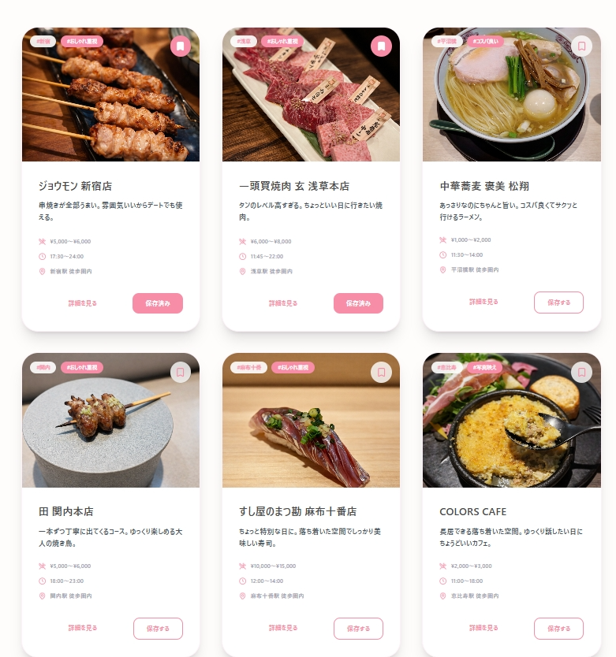

こんなお悩みありませんか？
多くの企業が陥る、LP制作の「罠」
アクセスはあるが売れない
広告費をかけて集客しても、肝心の成約に繋がっていない。
自社の強みが伝わらない
競合他社との違いが不明確で、価格競争に巻き込まれている。
デザインが古臭い
信頼感に欠けるデザインで、ユーザーがすぐに離脱してしまう。
ZeroPointが提供する
「勝てる」LP戦略
徹底した市場・競合調査
ただ作るのではなく、勝てる場所を見つけることから始めます。
心理学に基づいた構成
ユーザーの行動心理を逆算し、自然と「欲しい」と思わせる導線設計。
高速PDCAを可能にする設計
リリース後の改善を見据えた、拡張性の高いコーディング。
デモ制作・改善シミュレーション
架空商材を用いた、成果へのこだわりの可視化
※上記数値はデモ制作および架空商材での改善シミュレーションに基づく架空実績です。
ZeroPointは、
こんな方のためのサービスです。
Works
業界別のサイト事例

東京グルメまとめLP
女子会でお店選びに迷う人向けに設計した保存型LP。 導線設計とUIにこだわり、繰り返し使われる構造にしています。
制作中
制作中
制作の流れ
最短2週間で、あなたのビジネスを変えるLPを。
ヒアリング
現状の課題と目標を徹底的に伺います。
構成・ライティング
売れるための「骨組み」と「言葉」を設計。
デザイン・実装
ブランド価値を高めるビジュアルを構築。
納品・運用支援
公開後の改善アドバイスも行います。
Team
プロフェッショナルが、あなたのパートナーに。

船場 拓海
ターゲット設計・構成設計を担当。中小企業の集客導線を意識した LP 設計を得意とする。

猪狩 健太
UI/UX を意識したデザイン設計を担当。ユーザーが迷わず行動できる導線設計を強みとする。
代表挨拶
“ゼロから価値を生み出す起点でありたい”
ZeroPoint代表の船場拓海です。
室蘭・札幌を拠点に、2名体制でホームページ制作・LP制作を中心としたWeb制作を行っております。
少人数体制だからこそ、一つひとつのご依頼に丁寧に向き合いながらも、スピード感のある対応と柔軟なご提案を強みとしています。
また、デザイン性だけでなく、「集客」や「成果」に繋がる導線設計を重視し、実用的なWeb制作を行っています。
お客様のビジネスに深く寄り添い、目的に応じた最適なWebをご提案いたします。
初めての方でも安心してご相談いただけるよう、丁寧なコミュニケーションを大切にしています。